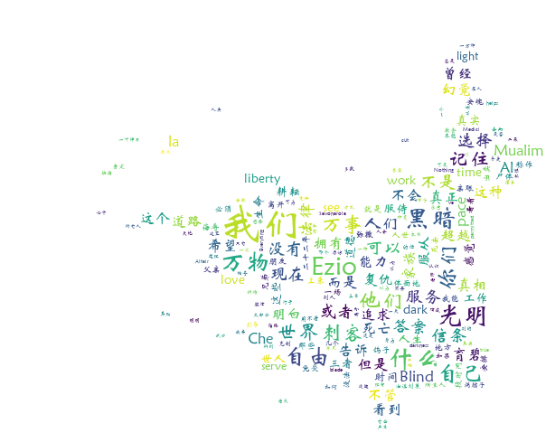

文件是操作系统虚拟出来的概念，拿来存储信息的
.txt / .word / .md / .py 存储的是文字
如何通过文本编辑器去控制txt文件
file_path = 'D:\pycharm_project\config.txt'
f = open(file_path, encoding='utf8') # 把该路径的文件读入内存
data = f.read() # 读取文件
print(data)
f.close() # 解除对操作系统的占用打开文件的三种操作
file_path = 'D:\pycharm_project\config.txt'
f = open(file_path, 'r',encoding='utf8')
print('f.readable:',f.readable())
print('f.writable:',f.writable())
# 打印结果：
f.readable: True
f.writable: False写入文件
file_path = 'D:\pycharm_project\config.txt'
f = open(file_path, 'a',encoding='utf8')
data = f.write('234')
print(data)print(r'\n') # \n本来是换行，加上r，变成了\ngbk/utf8只针对文本，所以音频通过rb模式读取二进制
b模式下没有encoding模式，b一般与r / a / w 一起使用
file_path = 'D:\pycharm_project\movie.mp4'
f = open(file_path, 'rb')r+可写可读，w+可写可读（清空文件），a+可写可读
一般不推荐使用可写可读模式
利用with open 可以自动关闭文件
with open('D:\pycharm_project\config.txt', 'r+', encoding='utf8') as f:
data = f.read()
print(data) # 这个缩进里面的代码都是文件打开的状态，运行到缩进外面会自动关闭文件
print(123)步骤：
import jieba
import wordcloud
import imageio
with open(r'D:\pycharm_project\day05\语录.txt','r',encoding='utf8') as f:
data = f.read()
ls = jieba.lcut(data)
s = ' '.join(ls)
img = imageio.imread(r'D:\pycharm_project\33.jpg')
w = wordcloud.WordCloud(width=1000,height=1000,font_path=r'C:\Windows\Fonts\STXINWEI.TTF',background_color='white',mask=img)
w.generate(s)
w.to_file('qq.png')
什么是爬虫?
爬虫指的是爬取数据.
什么是数据?
互联网中能看到的都是数据.
淘宝的商品信息等...
爬取某某网站的小视频...
爬虫的比喻
把数据比喻成一座宝藏, 爬虫其实就是在挖取宝藏.
爬虫的原理
import requests
response2 = requests.get(
url='https://timgsa.baidu.com/timg?image&quality=80&size=b9999_10000&sec=1566904515016&di=eda120ed19a6c3734cd82d75d8f51535&imgtype=0&src=http%3A%2F%2Fimg1.mydrivers.com%2Fimg%2F20160128%2F5f400f189753457dbb8f5f09ff25e50b.jpg'
)
with open('图片1.jpg', 'wb') as f: # wb写入二进制数据流
f.write(response2.content)
print('下载成功!')import requests
response = requests.get(
url='https://video.pearvideo.com/mp4/adshort/20190827/cont-1595412-14312901_adpkg-ad_hd.mp4'
)
with open('视频1.mp4','wb') as f:
f.write(response.content)
print('下载成功！')
'''
爬取豆瓣电影新片榜详情
'''
import requests
import re
response = requests.get(
url='https://movie.douban.com/top250'
)
# 获取响应文本
# print(response.text)
'''
1.电影名称
2.电影详情页链接
3.电影评分
4.电影评价人数
'''
# re.findall('正则匹配规则', '解析文本', re.S)
# .*? 贪婪匹配
movie_list = re.findall('<div class="item">.*?<a href="(.*?)">.*?<span class="title">(.*?)</span>.*?<span class="rating_num" property="v:average">(.*?)</span>.*?<span>(.*?)人评价</span>', response.text, re.S)
num = 1
for line in movie_list:
movie_url = line[0]
movie_name = line[1]
movie_point = line[2]
movie_count = line[3]
print(f'{num}.{movie_url},电影名字：{movie_name},评分：{movie_point},评价人数：{movie_count}')
num += 1
# 打印结果：
1.https://movie.douban.com/subject/1292052/,电影名字：肖申克的救赎,评分：9.7,评价人数：1569877
2.https://movie.douban.com/subject/1291546/,电影名字：霸王别姬,评分：9.6,评价人数：1159637
3.https://movie.douban.com/subject/1292720/,电影名字：阿甘正传,评分：9.5,评价人数：1221601
4.https://movie.douban.com/subject/1295644/,电影名字：这个杀手不太冷,评分：9.4,评价人数：1413306
5.https://movie.douban.com/subject/1292063/,电影名字：美丽人生,评分：9.5,评价人数：715179
6.https://movie.douban.com/subject/1292722/,电影名字：泰坦尼克号,评分：9.4,评价人数：1163959
7.https://movie.douban.com/subject/1291561/,电影名字：千与千寻,评分：9.3,评价人数：1254774
8.https://movie.douban.com/subject/1295124/,电影名字：辛德勒的名单,评分：9.5,评价人数：633659
9.https://movie.douban.com/subject/3541415/,电影名字：盗梦空间,评分：9.3,评价人数：1207515
10.https://movie.douban.com/subject/3011091/,电影名字：忠犬八公的故事,评分：9.3,评价人数：809641
11.https://movie.douban.com/subject/2131459/,电影名字：机器人总动员,评分：9.3,评价人数：801051
12.https://movie.douban.com/subject/3793023/,电影名字：三傻大闹宝莱坞,评分：9.2,评价人数：1093201
13.https://movie.douban.com/subject/1291549/,电影名字：放牛班的春天,评分：9.3,评价人数：761018
14.https://movie.douban.com/subject/1292001/,电影名字：海上钢琴师,评分：9.2,评价人数：884940
15.https://movie.douban.com/subject/1292064/,电影名字：楚门的世界,评分：9.2,评价人数：847507
16.https://movie.douban.com/subject/1889243/,电影名字：星际穿越,评分：9.3,评价人数：869189
17.https://movie.douban.com/subject/1292213/,电影名字：大话西游之大圣娶亲,评分：9.2,评价人数：850347
18.https://movie.douban.com/subject/1291560/,电影名字：龙猫,评分：9.2,评价人数：749971
19.https://movie.douban.com/subject/5912992/,电影名字：熔炉,评分：9.3,评价人数：503261
20.https://movie.douban.com/subject/1291841/,电影名字：教父,评分：9.3,评价人数：544360
21.https://movie.douban.com/subject/1307914/,电影名字：无间道,评分：9.2,评价人数：698197
22.https://movie.douban.com/subject/25662329/,电影名字：疯狂动物城,评分：9.2,评价人数：981830
23.https://movie.douban.com/subject/1849031/,电影名字：当幸福来敲门,评分：9.1,评价人数：885025
24.https://movie.douban.com/subject/3319755/,电影名字：怦然心动,评分：9.0,评价人数：989998
25.https://movie.douban.com/subject/6786002/,电影名字：触不可及,评分：9.2,评价人数：577088